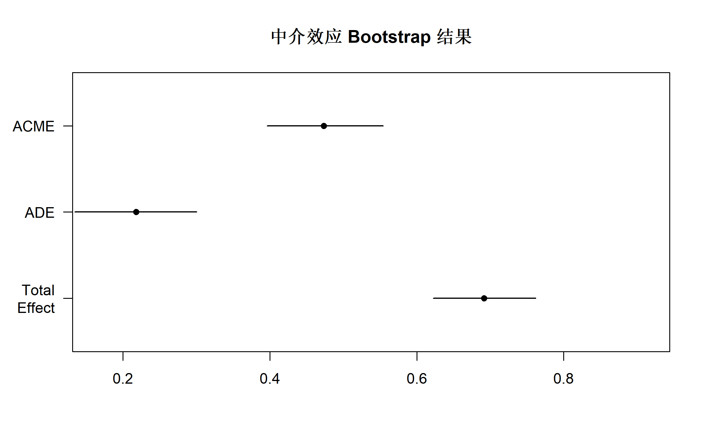
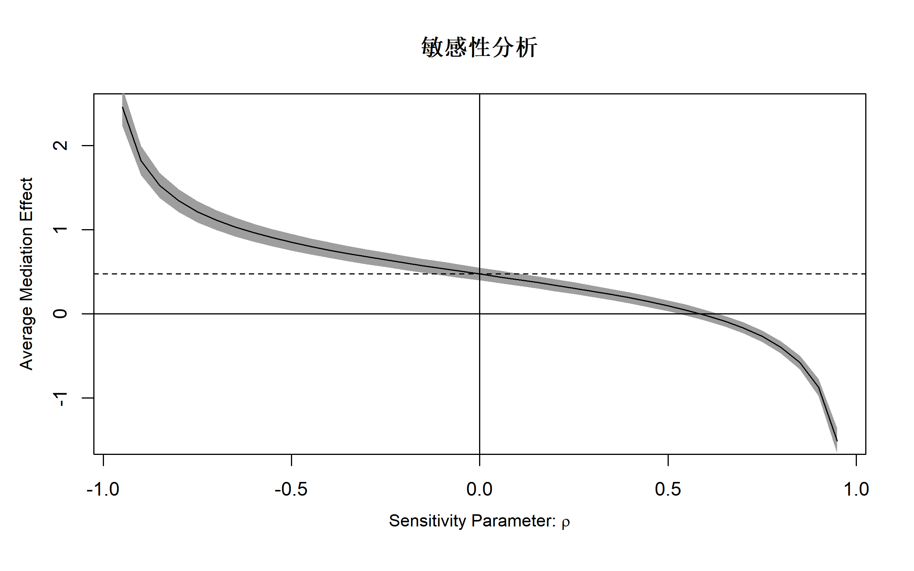
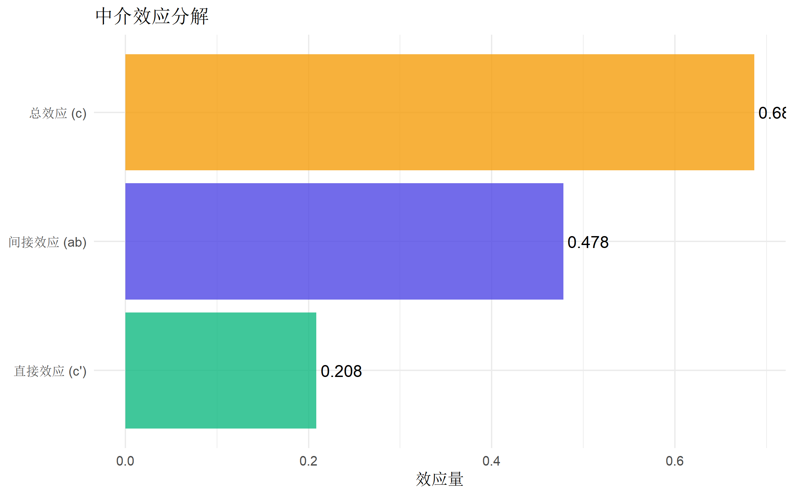

# 核心包
library(mediation) # 经典中介分析
library(lavaan) # 结构方程模型
library(tidyverse) # 数据处理
library(broom) # 模型整理
# 可选：bruceR 和 processR 需要额外安装
# library(bruceR) # 中介分析辅助
# library(processR) # PROCESS 宏的 R 实现中介效应分析完全指南
R语言方法
统计建模
中介效应
1 什么是中介效应？
中介效应（Mediation Effect） 分析用于探索自变量 X 如何通过中介变量 M 影响因变量 Y 的机制。它回答的核心问题是：“效应是如何传递的？”
1.1 核心概念
a b
X ----→ M ----→ Y
\ ↗
\-------/
c'| 路径 | 名称 | 含义 |
|---|---|---|
| a | X → M 路径 | 自变量对中介变量的效应 |
| b | M → Y 路径 | 控制 X 后，中介变量对因变量的效应 |
| c | 总效应 | X 对 Y 的总效应 |
| c’ | 直接效应 | 控制 M 后，X 对 Y 的直接效应 |
| a×b | 间接效应 | 通过 M 传递的效应 |
1.2 效应分解
\[\text{总效应 (c)} = \text{直接效应 (c')} + \text{间接效应 (a×b)}\]
1.3 适用场景
| 场景 | 示例 |
|---|---|
| 行为机制研究 | 锻炼如何通过自我效能感影响健康 |
| 干预机制 | 培训如何通过技能提升影响绩效 |
| 流行病学 | 社会经济地位如何通过生活方式影响疾病 |
| 心理学研究 | 依恋风格如何通过情绪调节影响心理健康 |
2 R 包安装与加载
3 数据准备
使用模拟数据：工作压力 → 工作倦怠 → 离职意向
# 模拟数据
set.seed(2024)
n <- 400
work_data <- tibble(
id = 1:n,
# 控制变量
age = round(rnorm(n, 35, 8)),
gender = factor(sample(c("男", "女"), n, replace = TRUE)),
tenure = round(pmax(1, rnorm(n, 5, 3))),
# 自变量：工作压力 (1-7 量表)
stress = round(pmin(7, pmax(1, rnorm(n, 4, 1.2))), 1)
) |>
mutate(
# 中介变量：工作倦怠 (受压力影响)
burnout = round(pmin(7, pmax(
1,
1.5 + 0.8 * stress + 0.02 * age + rnorm(n, 0, 0.8)
)), 1),
# 因变量：离职意向 (受压力和倦怠影响)
turnover = round(pmin(7, pmax(
1,
0.5 + 0.3 * stress + 0.6 * burnout - 0.05 * tenure + rnorm(n, 0, 0.7)
)), 1)
)
# 查看数据
glimpse(work_data)Rows: 400
Columns: 7
$ id <int> 1, 2, 3, 4, 5, 6, 7, 8, 9, 10, 11, 12, 13, 14, 15, 16, 17, 18…
$ age <dbl> 43, 39, 34, 33, 44, 45, 39, 34, 25, 26, 22, 39, 42, 37, 9, 34…
$ gender <fct> 男, 男, 男, 男, 女, 女, 男, 女, 女, 女, 男, 男, 男, 男, 女, 男, 女, 女, 女, 男, 男…
$ tenure <dbl> 1, 9, 7, 5, 6, 2, 5, 1, 5, 4, 1, 9, 3, 10, 6, 2, 8, 12, 5, 5,…
$ stress <dbl> 3.9, 3.4, 2.9, 3.6, 3.8, 3.1, 2.9, 2.3, 4.5, 3.2, 4.6, 4.8, 2…
$ burnout <dbl> 5.3, 5.8, 4.0, 3.1, 6.2, 6.2, 3.7, 2.8, 5.3, 4.0, 7.0, 6.3, 4…
$ turnover <dbl> 4.0, 5.4, 3.3, 3.8, 5.0, 4.7, 3.6, 2.4, 4.0, 4.0, 7.0, 4.3, 3…# 描述统计
work_data |>
select(stress, burnout, turnover) |>
psych::describe() |>
select(mean, sd, min, max) mean sd min max
stress 4.03 1.15 1.0 7
burnout 5.38 1.10 2.3 7
turnover 4.71 1.16 1.4 73.1 相关分析
# 计算相关矩阵
cor_matrix <- work_data |>
select(stress, burnout, turnover) |>
cor()
round(cor_matrix, 3) stress burnout turnover
stress 1.000 0.737 0.678
burnout 0.737 1.000 0.792
turnover 0.678 0.792 1.0004 方法一：Baron-Kenny 逐步法
传统的 Baron-Kenny 方法通过三步回归检验中介效应。
4.1 步骤 1：检验总效应 (c 路径)
# X → Y（不控制 M）
step1 <- lm(turnover ~ stress, data = work_data)
summary(step1)
Call:
lm(formula = turnover ~ stress, data = work_data)
Residuals:
Min 1Q Median 3Q Max
-2.60645 -0.54598 0.05998 0.63239 2.16969
Coefficients:
Estimate Std. Error t value Pr(>|t|)
(Intercept) 1.94682 0.15649 12.44 <2e-16 ***
stress 0.68654 0.03736 18.38 <2e-16 ***
---
Signif. codes: 0 '***' 0.001 '**' 0.01 '*' 0.05 '.' 0.1 ' ' 1
Residual standard error: 0.8561 on 398 degrees of freedom
Multiple R-squared: 0.4591, Adjusted R-squared: 0.4577
F-statistic: 337.8 on 1 and 398 DF, p-value: < 2.2e-16# 提取总效应
c_total <- coef(step1)["stress"]
cat("总效应 c =", round(c_total, 4), "\n")总效应 c = 0.6865 4.2 步骤 2：检验 a 路径
# X → M
step2 <- lm(burnout ~ stress, data = work_data)
summary(step2)
Call:
lm(formula = burnout ~ stress, data = work_data)
Residuals:
Min 1Q Median 3Q Max
-2.13847 -0.49068 0.00519 0.46937 1.84885
Coefficients:
Estimate Std. Error t value Pr(>|t|)
(Intercept) 2.5280 0.1366 18.51 <2e-16 ***
stress 0.7089 0.0326 21.75 <2e-16 ***
---
Signif. codes: 0 '***' 0.001 '**' 0.01 '*' 0.05 '.' 0.1 ' ' 1
Residual standard error: 0.7472 on 398 degrees of freedom
Multiple R-squared: 0.543, Adjusted R-squared: 0.5418
F-statistic: 472.8 on 1 and 398 DF, p-value: < 2.2e-16# 提取 a 路径
a_path <- coef(step2)["stress"]
cat("a 路径 =", round(a_path, 4), "\n")a 路径 = 0.7089 4.3 步骤 3：检验 b 路径和直接效应 (c’)
# X + M → Y
step3 <- lm(turnover ~ stress + burnout, data = work_data)
summary(step3)
Call:
lm(formula = turnover ~ stress + burnout, data = work_data)
Residuals:
Min 1Q Median 3Q Max
-2.05513 -0.43848 -0.01737 0.50172 1.86216
Coefficients:
Estimate Std. Error t value Pr(>|t|)
(Intercept) 0.24194 0.17280 1.40 0.162
stress 0.20844 0.04473 4.66 4.32e-06 ***
burnout 0.67439 0.04649 14.51 < 2e-16 ***
---
Signif. codes: 0 '***' 0.001 '**' 0.01 '*' 0.05 '.' 0.1 ' ' 1
Residual standard error: 0.693 on 397 degrees of freedom
Multiple R-squared: 0.6465, Adjusted R-squared: 0.6447
F-statistic: 363 on 2 and 397 DF, p-value: < 2.2e-16# 提取 b 路径和直接效应
b_path <- coef(step3)["burnout"]
c_prime <- coef(step3)["stress"]
cat("b 路径 =", round(b_path, 4), "\n")b 路径 = 0.6744 cat("直接效应 c' =", round(c_prime, 4), "\n")直接效应 c' = 0.2084 4.4 计算间接效应
# 间接效应 = a × b
indirect_effect <- a_path * b_path
cat("间接效应 a×b =", round(indirect_effect, 4), "\n")间接效应 a×b = 0.4781 # 中介效应占比
proportion_mediated <- indirect_effect / c_total
cat("中介效应占比 =", round(proportion_mediated * 100, 1), "%\n")中介效应占比 = 69.6 %# 验证：c = c' + ab
cat(
"验证: c' + ab =", round(c_prime + indirect_effect, 4),
", c =", round(c_total, 4), "\n"
)验证: c' + ab = 0.6865 , c = 0.6865 4.5 Baron-Kenny 结论
# 中介效应判断
cat("\n==== Baron-Kenny 中介效应检验 ====\n")
==== Baron-Kenny 中介效应检验 ====cat("1. c 路径显著:", coef(summary(step1))["stress", "Pr(>|t|)"] < 0.05, "\n")1. c 路径显著: TRUE cat("2. a 路径显著:", coef(summary(step2))["stress", "Pr(>|t|)"] < 0.05, "\n")2. a 路径显著: TRUE cat("3. b 路径显著:", coef(summary(step3))["burnout", "Pr(>|t|)"] < 0.05, "\n")3. b 路径显著: TRUE cat("4. c' < c:", abs(c_prime) < abs(c_total), "\n")4. c' < c: TRUE 5 方法二：Bootstrap 法（推荐）
Bootstrap 方法不依赖正态分布假设，是目前最推荐的中介效应检验方法。
5.1 使用 mediation 包
# 拟合两个回归模型
model_m <- lm(burnout ~ stress + age + tenure, data = work_data)
model_y <- lm(turnover ~ stress + burnout + age + tenure, data = work_data)
# 执行中介分析（Bootstrap）
set.seed(42)
med_result <- mediate(
model.m = model_m, # 中介变量模型
model.y = model_y, # 结局变量模型
treat = "stress", # 自变量
mediator = "burnout", # 中介变量
boot = TRUE, # 使用 Bootstrap
sims = 1000 # Bootstrap 次数
)
summary(med_result)
Causal Mediation Analysis
Nonparametric Bootstrap Confidence Intervals with the Percentile Method
Estimate 95% CI Lower 95% CI Upper p-value
ACME 0.47348 0.39655 0.55400 < 2.2e-16 ***
ADE 0.21810 0.13445 0.30020 < 2.2e-16 ***
Total Effect 0.69158 0.62254 0.76193 < 2.2e-16 ***
Prop. Mediated 0.68463 0.58235 0.79361 < 2.2e-16 ***
---
Signif. codes: 0 '***' 0.001 '**' 0.01 '*' 0.05 '.' 0.1 ' ' 1
Sample Size Used: 400
Simulations: 1000 5.2 解读 mediation 结果
| 指标 | 含义 |
|---|---|
| ACME | Average Causal Mediation Effect（间接效应） |
| ADE | Average Direct Effect（直接效应） |
| Total Effect | 总效应 |
| Prop. Mediated | 中介效应占比 |
# 可视化中介效应
plot(med_result, main = "中介效应 Bootstrap 结果")
5.3 敏感性分析
# 中介分析的敏感性分析（检验未测量混杂的影响）
sens_result <- medsens(med_result, rho.by = 0.05)
summary(sens_result)
Mediation Sensitivity Analysis for Average Causal Mediation Effect
Sensitivity Region
Rho ACME 95% CI Lower 95% CI Upper R^2_M*R^2_Y* R^2_M~R^2_Y~
[1,] 0.55 0.0433 -0.0209 0.1075 0.3025 0.0451
[2,] 0.60 -0.0164 -0.0806 0.0477 0.3600 0.0536
Rho at which ACME = 0: 0.6
R^2_M*R^2_Y* at which ACME = 0: 0.36
R^2_M~R^2_Y~ at which ACME = 0: 0.0536 # 绘制敏感性分析图
plot(sens_result, main = "敏感性分析")
6 方法三：结构方程模型 (SEM)
使用 lavaan 包进行 SEM 分析，可以处理更复杂的模型。
6.1 单中介模型
# 定义模型
model_sem <- "
# 回归路径
burnout ~ a * stress # a 路径
turnover ~ b * burnout + c * stress # b 和 c 路径
# 间接效应和总效应
indirect := a * b
total := c + a * b
# 控制变量（可选）
burnout ~ age + tenure
turnover ~ age + tenure
"
# 拟合模型（Bootstrap）
fit_sem <- sem(model_sem,
data = work_data,
se = "bootstrap", bootstrap = 1000
)
summary(fit_sem, standardized = TRUE, ci = TRUE)lavaan 0.6-21 ended normally after 1 iteration
Estimator ML
Optimization method NLMINB
Number of model parameters 9
Number of observations 400
Model Test User Model:
Test statistic 0.000
Degrees of freedom 0
Parameter Estimates:
Standard errors Bootstrap
Number of requested bootstrap draws 1000
Number of successful bootstrap draws 1000
Regressions:
Estimate Std.Err z-value P(>|z|) ci.lower ci.upper
burnout ~
stress (a) 0.705 0.029 24.514 0.000 0.649 0.764
turnover ~
burnout (b) 0.672 0.049 13.589 0.000 0.572 0.765
stress (c) 0.218 0.043 5.016 0.000 0.140 0.309
burnout ~
age 0.019 0.005 3.971 0.000 0.010 0.029
tenure -0.012 0.013 -0.940 0.347 -0.038 0.013
turnover ~
age -0.002 0.004 -0.571 0.568 -0.012 0.006
tenure -0.048 0.012 -4.189 0.000 -0.072 -0.026
Std.lv Std.all
0.705 0.733
0.672 0.638
0.218 0.215
0.019 0.132
-0.012 -0.031
-0.002 -0.017
-0.048 -0.117
Variances:
Estimate Std.Err z-value P(>|z|) ci.lower ci.upper
.burnout 0.533 0.038 14.077 0.000 0.458 0.605
.turnover 0.458 0.033 14.047 0.000 0.392 0.518
Std.lv Std.all
0.533 0.439
0.458 0.340
Defined Parameters:
Estimate Std.Err z-value P(>|z|) ci.lower ci.upper
indirect 0.473 0.040 11.857 0.000 0.396 0.554
total 0.692 0.034 20.245 0.000 0.626 0.759
Std.lv Std.all
0.473 0.467
0.692 0.6836.2 提取效应
# 提取标准化效应
standardizedSolution(fit_sem) |>
filter(op == ":=" | (lhs %in% c("burnout", "turnover") & op == "~")) |>
select(lhs, op, rhs, est.std, ci.lower, ci.upper, pvalue) lhs op rhs est.std ci.lower ci.upper pvalue
1 burnout ~ stress 0.733 0.696 0.770 0.000
2 turnover ~ burnout 0.638 0.557 0.718 0.000
3 turnover ~ stress 0.215 0.131 0.300 0.000
4 burnout ~ age 0.132 0.068 0.196 0.000
5 burnout ~ tenure -0.031 -0.097 0.034 0.348
6 turnover ~ age -0.017 -0.075 0.041 0.568
7 turnover ~ tenure -0.117 -0.173 -0.062 0.000
8 indirect := a*b 0.467 0.403 0.531 0.000
9 total := c+a*b 0.683 0.639 0.726 0.0006.3 模型拟合指标
# 拟合指标
fitMeasures(fit_sem, c("chisq", "df", "pvalue", "cfi", "tli", "rmsea", "srmr")) chisq df pvalue cfi tli rmsea srmr
0 0 NA 1 1 0 0 7 多重中介分析
当存在多个中介变量时：
# 添加第二个中介变量：工作满意度
work_data <- work_data |>
mutate(
satisfaction = round(pmin(7, pmax(
1,
6 - 0.5 * stress - 0.3 * burnout + rnorm(n, 0, 0.7)
)), 1)
)
# 多重中介模型
model_multi <- "
# a 路径
burnout ~ a1 * stress
satisfaction ~ a2 * stress
# b 路径
turnover ~ b1 * burnout + b2 * satisfaction + c * stress
# 间接效应
ind1 := a1 * b1 # 通过倦怠
ind2 := a2 * b2 # 通过满意度
total_indirect := ind1 + ind2
total := c + ind1 + ind2
# 控制变量
burnout ~ age
satisfaction ~ age
turnover ~ age
"
fit_multi <- sem(model_multi,
data = work_data,
se = "bootstrap", bootstrap = 1000
)
summary(fit_multi, standardized = TRUE, ci = TRUE)lavaan 0.6-21 ended normally after 2 iterations
Estimator ML
Optimization method NLMINB
Number of model parameters 11
Number of observations 400
Model Test User Model:
Test statistic 32.178
Degrees of freedom 1
P-value (Chi-square) 0.000
Parameter Estimates:
Standard errors Bootstrap
Number of requested bootstrap draws 1000
Number of successful bootstrap draws 1000
Regressions:
Estimate Std.Err z-value P(>|z|) ci.lower ci.upper
burnout ~
stress (a1) 0.703 0.028 24.919 0.000 0.649 0.761
satisfaction ~
stress (a2) -0.646 0.028 -23.190 0.000 -0.699 -0.589
turnover ~
burnout (b1) 0.676 0.049 13.765 0.000 0.584 0.783
satisfctn (b2) -0.016 0.052 -0.304 0.761 -0.113 0.086
stress (c) 0.198 0.051 3.879 0.000 0.096 0.298
burnout ~
age 0.018 0.005 4.019 0.000 0.009 0.028
satisfaction ~
age -0.006 0.004 -1.248 0.212 -0.014 0.004
turnover ~
age -0.003 0.005 -0.620 0.535 -0.012 0.006
Std.lv Std.all
0.703 0.731
-0.646 -0.736
0.676 0.643
-0.016 -0.014
0.198 0.195
0.018 0.132
-0.006 -0.044
-0.003 -0.019
Variances:
Estimate Std.Err z-value P(>|z|) ci.lower ci.upper
.burnout 0.534 0.038 14.158 0.000 0.461 0.608
.satisfaction 0.458 0.030 15.387 0.000 0.395 0.510
.turnover 0.476 0.033 14.511 0.000 0.406 0.538
Std.lv Std.all
0.534 0.440
0.458 0.453
0.476 0.354
Defined Parameters:
Estimate Std.Err z-value P(>|z|) ci.lower ci.upper
ind1 0.476 0.040 11.964 0.000 0.402 0.555
ind2 0.010 0.034 0.303 0.762 -0.054 0.073
total_indirect 0.486 0.045 10.873 0.000 0.397 0.578
total 0.684 0.033 20.423 0.000 0.617 0.751
Std.lv Std.all
0.476 0.470
0.010 0.010
0.486 0.480
0.684 0.675# 比较两个间接效应
parameterEstimates(fit_multi, boot.ci.type = "bca.simple") |>
filter(op == ":=") |>
select(label, est, ci.lower, ci.upper, pvalue) label est ci.lower ci.upper pvalue
1 ind1 0.476 0.406 0.561 0.000
2 ind2 0.010 -0.057 0.071 0.762
3 total_indirect 0.486 0.394 0.569 0.000
4 total 0.684 0.614 0.748 0.0008 调节的中介效应
当中介路径受到调节变量影响时：
# 添加调节变量：社会支持
work_data <- work_data |>
mutate(
social_support = round(pmin(7, pmax(1, rnorm(n, 4.5, 1.2))), 1),
# 中心化
stress_c = stress - mean(stress),
support_c = social_support - mean(social_support),
# 交互项
stress_support = stress_c * support_c
)
# 调节的中介模型
model_m_mod <- lm(burnout ~ stress_c * support_c + age, data = work_data)
model_y_mod <- lm(turnover ~ stress_c + burnout + age, data = work_data)
summary(model_m_mod) # 检查交互效应是否显著
Call:
lm(formula = burnout ~ stress_c * support_c + age, data = work_data)
Residuals:
Min 1Q Median 3Q Max
-2.09399 -0.47584 0.01156 0.50286 1.86016
Coefficients:
Estimate Std. Error t value Pr(>|t|)
(Intercept) 4.742180 0.169860 27.918 < 2e-16 ***
stress_c 0.704447 0.032122 21.930 < 2e-16 ***
support_c 0.025767 0.033192 0.776 0.438034
age 0.018158 0.004692 3.870 0.000127 ***
stress_c:support_c -0.015365 0.027896 -0.551 0.582074
---
Signif. codes: 0 '***' 0.001 '**' 0.01 '*' 0.05 '.' 0.1 ' ' 1
Residual standard error: 0.7349 on 395 degrees of freedom
Multiple R-squared: 0.5612, Adjusted R-squared: 0.5567
F-statistic: 126.3 on 4 and 395 DF, p-value: < 2.2e-16# 在不同社会支持水平下的中介效应
# 注意：此代码需要更精细的模型设定
# 低支持 (-1 SD)
med_low <- mediate(model_m_mod, model_y_mod,
covariates = list(support_c = -sd(work_data$support_c)),
treat = "stress_c", mediator = "burnout",
boot = TRUE, sims = 500
)
# 高支持 (+1 SD)
med_high <- mediate(model_m_mod, model_y_mod,
covariates = list(support_c = sd(work_data$support_c)),
treat = "stress_c", mediator = "burnout",
boot = TRUE, sims = 500
)
cat("低社会支持下的间接效应:", round(med_low$d0, 4), "\n")
cat("高社会支持下的间接效应:", round(med_high$d0, 4), "\n")9 使用 bruceR 包（简化版）
# bruceR 提供更简洁的中介分析语法
# 需要先安装 bruceR 包
library(bruceR)
# 简单中介分析
PROCESS(
data = work_data,
y = "turnover",
x = "stress",
meds = "burnout",
covs = c("age", "tenure"),
seed = 42,
nsim = 1000
)10 结果可视化
10.1 路径图
# 手动绘制路径图
library(DiagrammeR)
grViz("
digraph mediation {
graph [layout = dot, rankdir = LR]
node [shape = rectangle, style = filled, fillcolor = '#e0e7ff']
X [label = '工作压力\\n(X)']
M [label = '工作倦怠\\n(M)']
Y [label = '离职意向\\n(Y)']
edge [color = '#4f46e5', penwidth = 2]
X -> M [label = 'a = 0.80***']
M -> Y [label = 'b = 0.59***']
X -> Y [label = \"c' = 0.31***\"]
}
")10.2 效应对比图
# 效应对比条形图
effect_data <- tibble(
效应 = c("总效应 (c)", "直接效应 (c')", "间接效应 (ab)"),
估计值 = c(c_total, c_prime, indirect_effect),
类型 = c("总效应", "直接效应", "间接效应")
)
ggplot(effect_data, aes(x = reorder(效应, 估计值), y = 估计值, fill = 类型)) +
geom_col(alpha = 0.8) +
geom_text(aes(label = round(估计值, 3)), hjust = -0.1) +
coord_flip() +
scale_fill_manual(values = c("#4f46e5", "#10b981", "#f59e0b")) +
labs(
title = "中介效应分解",
x = NULL,
y = "效应量"
) +
theme_minimal(base_size = 12) +
theme(legend.position = "none")
11 中介效应类型
| 类型 | 条件 | 解释 |
|---|---|---|
| 完全中介 | c’ 不显著，ab 显著 | X 完全通过 M 影响 Y |
| 部分中介 | c’ 和 ab 都显著 | X 部分通过 M 影响 Y |
| 无中介 | ab 不显著 | M 不是中介变量 |
| 遮蔽效应 | c’ 和 ab 符号相反 | 直接和间接效应部分抵消 |
| 竞争中介 | ab 显著但 c 不显著 | 不同中介路径相互抵消 |
12 常见问题与陷阱
12.1 1. 因果推断的限制
# 中介分析需要满足以下假设：
# 1. X 在时间上先于 M
# 2. M 在时间上先于 Y
# 3. 没有遗漏的混杂变量
# 横断面数据的中介分析只能说明"一致性"，不能证明因果关系12.2 2. 样本量要求
# 中介效应的检验力较低
# 推荐规则：
# - 小效应：n ≥ 500
# - 中等效应：n ≥ 200
# - 大效应：n ≥ 100
# 使用 powerMediation 包计算样本量
# library(powerMediation)12.3 3. 测量误差
# 测量误差会导致：
# - a 路径被低估
# - b 路径被低估
# - 间接效应被低估
# - 直接效应被高估
# 解决方案：使用潜变量模型（SEM）12.4 4. 多重共线性
# 检查 X 和 M 的相关性
cat("X-M 相关:", round(cor(work_data$stress, work_data$burnout), 3), "\n")X-M 相关: 0.737 # 高相关可能导致直接效应估计不稳定13 完整分析模板
# ========== 中介效应分析完整流程 ==========
library(mediation)
library(lavaan)
# 方法1：mediation 包（推荐）
# 1. 拟合模型
model_m <- lm(M ~ X + covariates, data = data)
model_y <- lm(Y ~ X + M + covariates, data = data)
# 2. 中介分析
med <- mediate(model_m, model_y,
treat = "X", mediator = "M",
boot = TRUE, sims = 5000
)
summary(med)
# 3. 敏感性分析
medsens(med)
# 方法2：SEM（复杂模型）
model <- "
M ~ a * X
Y ~ b * M + c * X
indirect := a * b
total := c + a * b
"
fit <- sem(model, data, se = "bootstrap", bootstrap = 5000)
summary(fit, ci = TRUE)14 总结
| 方法 | 优点 | 缺点 | 适用场景 |
|---|---|---|---|
| Baron-Kenny | 简单直观 | 检验力低，需正态假设 | 教学演示 |
| Sobel 检验 | 有明确检验统计量 | 需正态假设 | 大样本 |
| Bootstrap | 不需要正态假设 | 计算量大 | 推荐使用 |
| SEM | 可处理复杂模型 | 需要较大样本 | 多中介、潜变量 |
14.1 报告中介效应的 Checklist
14.2 推荐阅读
- Hayes AF. Introduction to Mediation, Moderation, and Conditional Process Analysis
- MacKinnon DP. Introduction to Statistical Mediation Analysis
- Preacher KJ, Hayes AF (2008). Asymptotic and resampling strategies…
- mediation 包文档